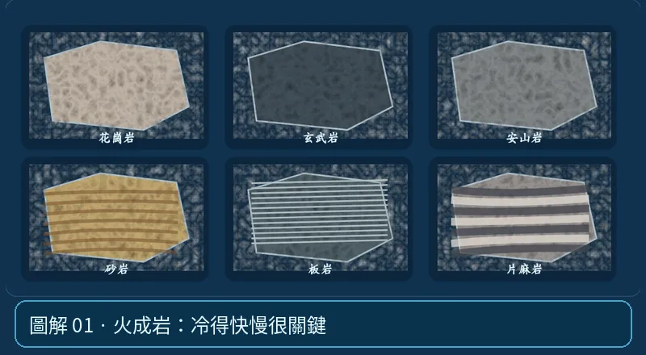

第 03 單元｜圖解 1/6｜課本 p.71–75
火成岩：冷得快慢很關鍵
深成岩在地下緩慢冷卻，晶體通常較大（花崗岩、輝長岩）；火山岩在地表或淺部快速冷卻，常有細粒、玻璃質或氣孔（玄武岩、安山岩、流紋岩）。
① 看一眼② 操作圖③ 自己推理④ 揭開解答
🔬 這張圖，請自己動手試
操作圖上方的頁籤、滑桿或按鈕；圖片也能左右滑動放大觀看。
互動圖解 · 火成岩：冷得快慢很關鍵

原創 SVG 地科教學模型，方便理解，非真實比例、非即時地震資料；互動無法載入時仍有靜態圖。
STEP 01 · 先觀察
👀 眼睛先找線索
先選一個粗粒結晶的火成岩標本，再和細粒或多氣孔的標本比較。
💡 為什麼是這樣？
岩漿在地底慢冷有較長結晶時間，常形成較粗大晶體；靠近地表快冷較容易形成細粒、玻璃質或氣孔，但岩漿化學成分也是辨認岩種的重要依據。
🎯 換個問法想一題
花崗岩和玄武岩的所有差異，都只是冷卻速度不同嗎？
我想好了，點開看答案 ↓
不對。花崗岩與玄武岩的礦物成分及二氧化矽含量也不同。
⚡ 一句記住：岩漿冷卻